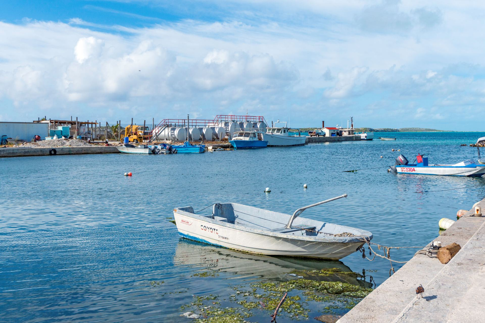
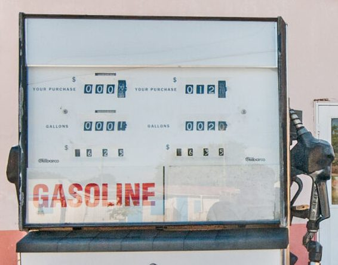
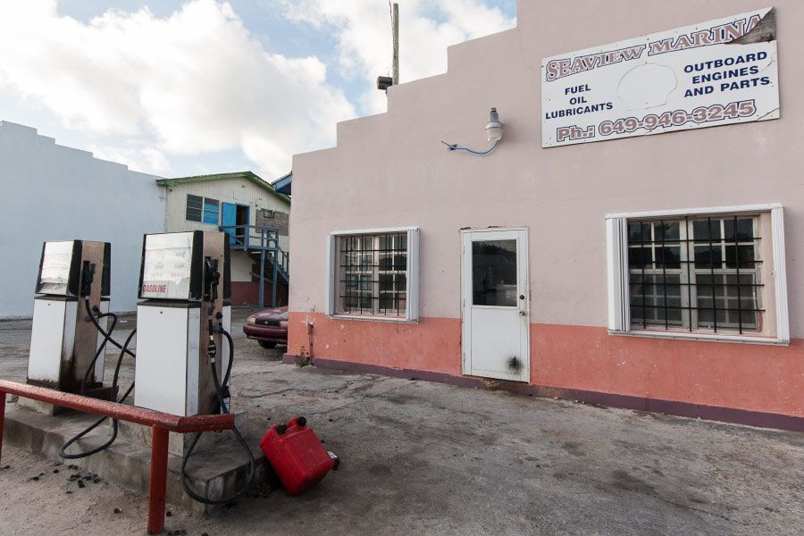
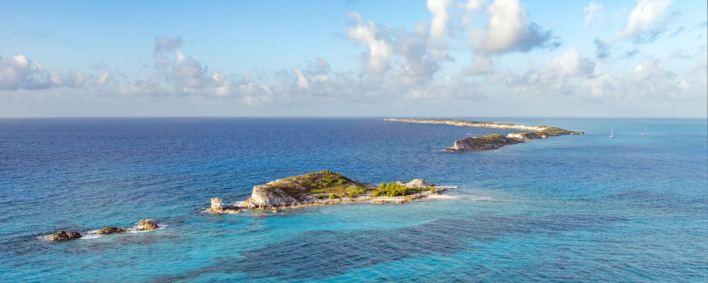
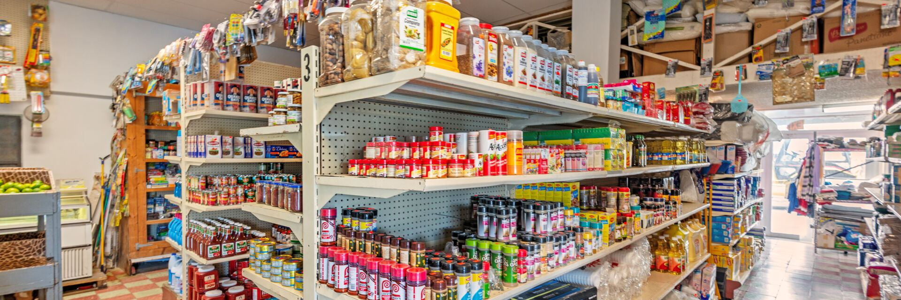
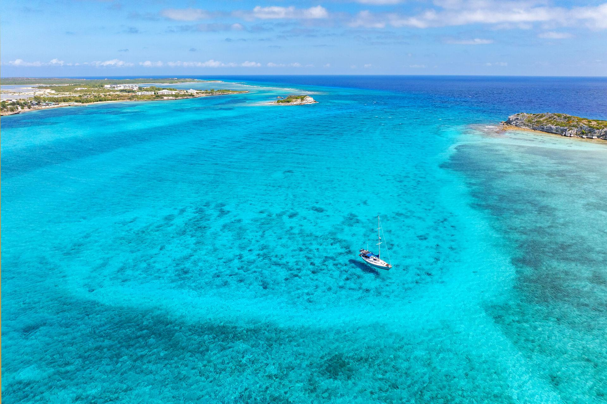
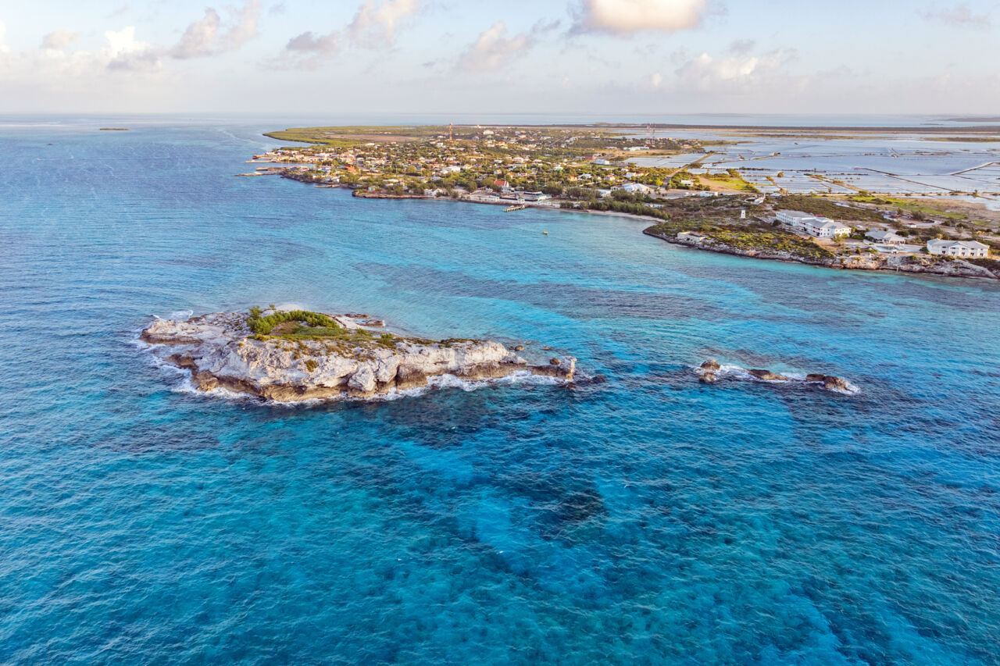

Seaview Marina
Our name in code flags, read from the top: Sierra, Echo, Alfa, Victor, India, Echo, Whiskey.
Gasoline, diesel, fresh water and power on the dock in Cockburn Harbour, South Caicos.
Call ahead on VHF 16
Fuel up, tie up
Gasoline and diesel are pumped right on the dock, and boats tied alongside can take on fresh water and 120-volt power.
The sign over the fuel house door lists the rest: oil, lubricants, outboard engines and parts.
- Gasoline
- Diesel
- Water
- Power



Coming in from the passage
Carry current charts: these waters have many hazards.
- Deep
Between Long Cay and Dove Cay the water stays deep: the easy way in from the Columbus Passage.
- 6–10 ft
Outside the harbour the depth runs from 6 to 10 feet. Over the Banks from Providenciales, shoals make it hard for deep-draft boats.
- 3 ft
At the dock it can be as little as 3 feet, so check your draft.
- VHF 16
Call Seaview Marina on channel 16 before you come alongside.

Groceries and a car too
Seaview Supermarket & Rentals answers on the same number as the dock. It is the largest grocery on South Caicos, a short walk up from the water.
Dry goods
Stock the galley for the next leg.
Cold and frozen
Refrigerated and frozen food for the cooler.
Cold drinks
For the crew, after the crossing.
General supplies
The everyday things that run out at sea.
Some hardware
A small selection for quick fixes.
Car rentals
See the island, booked at the same counter.
Engine trouble
Ask on VHF 16 what can be done here. Bigger repairs go to Providenciales.
One number
649 231 4554 for the dock, the shop and the cars.


Dinner across the street
Sunset Café & Bar, across Stubb's Street from the dock, cooks local dishes and fresh-caught seafood.
Anchor in the lee of Long Cay
A sheltered anchorage less than a mile from the dock, inside the Admiral Cockburn Land and Sea National Park, one of the loveliest stretches of coast in the Turks and Caicos.
Check the rules on anchoring licences and fees before you drop the hook.
Tell the dock what you need
Set the pump, add your boat and send it on WhatsApp before you arrive, so the dock knows what is coming.
RadioVHF channel 16
Find usStubb's Street, Cockburn Harbour, South CaicosReviews
No reviews on Google yet. If you have tied up here, yours can be the first.
Review us on Google